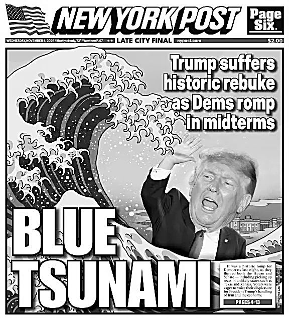
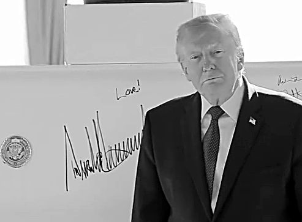
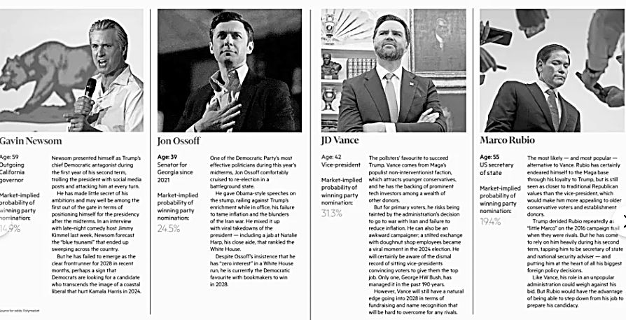
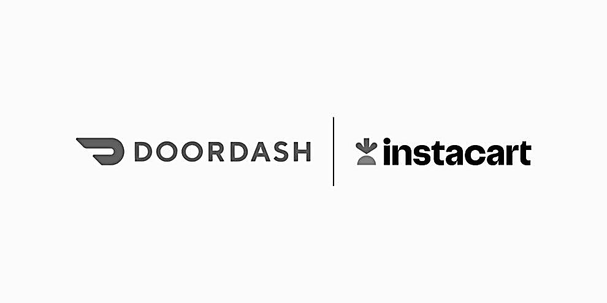
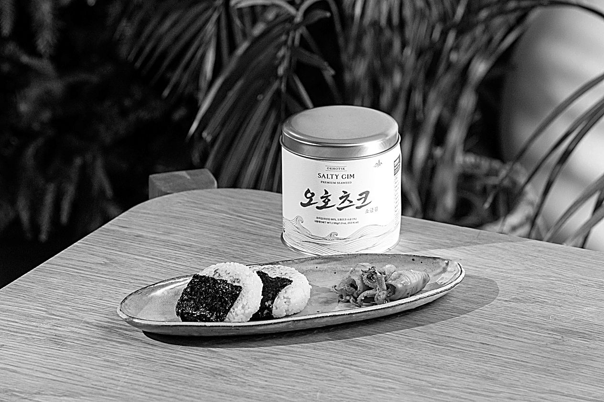

2026년 11월 6일 (금) 외신 브리핑 & 동동의 테크 타운
오호츠크 리포트

미국 '블루 쓰나미'에 주식시장까지 쓸려나가다
수요일 미국 중간선거에서 민주당(푸른색)이 대승을 거두고 상원 하원 양원의 주도권을 쥐게 되자, 한미일 주가지수가 급락.
- 새로 뽑힌 민주당 의원들과 주지사들이 AI 데이터센터 건설에 부정적이기 때문. 거기에 앞으로 뭐가 어찌될지 모른다는 불안감도 작용.
- 어젯밤 나스닥 지수가 -5.5%, S&P 500 지수가 -4.36%. 이 두 지수에 포함된 회사들을 합치면 하룻동안 5.4조 달러의 시가총액이 사라져 금액 기준 미국 사상 최대 폭락을 기록.
- 트럼프 대통령은 "멍청한 민주당(Dumocrats)이 이겼기에 주식시장이 폭락했다. 슬프지만 너희 스스로를 탓해라"라고 트루스 소셜에 포스팅. 여기서 "너희"가 누굴 지칭하는지는 안 말함.
- 미국이 기침하면 감기에 걸리는 한국 코스피 지수. 오늘 오전 8% 떨어져 4000대로 진입했다가 약간 만회해서 -6%, 5059으로 마감.
- 일본 니케이 지수도 오늘 -6%.
- 소프트뱅크는 수목금 3일간 -20%...ㄷㄷㄷ 미국 선거 소식에다가 중국 정부가 소프트뱅크의 중국 로봇업체 인수를 막았다는 소식이 전해졌기 때문.
- 이 와중에 토요타, 현대차는 주가가 약간 올라. 미국 민주당이 친환경차에 대한 지원을 늘릴 거라는 기대감 작용.

트럼프: '왜들 호들갑이지?'
공화당의 이번 선거 패배 원인은 누가 봐도 고유가, 고물가. 트럼프가 시작한 이란 전쟁으로 인해 글로벌 석유 공급이 줄었기 때문.
- 트럼프 대통령과 JD 밴스 부통령도 전쟁 때문이라고 인정. 그러나 트럼프는 기자들과의 질의응답에서 "그래도 이란이 핵무기를 개발하게 놓아둘 수는 없었다. 다시 전쟁해야 한다면 한다"고 말해.
- 그는 목요일 백악관 연회장 상량식에 참석해 이런저런 질문들에 태연하게 답하고, 대들보에다가 서명과 함께 'LOVE'라고 적었음. (위 사진)
앞으로 트럼프의 길은?
- 어차피 2번째 대통령 임기도 다 끝나가기에 중간선거 패배가 개인적으로 큰 피해는 아님. 슬슬 책상 정리 시작. 남은 기간 적당히 말년병장처럼 때우고 온화한 할아버지 이미지로 변신해 은퇴하는 해피엔딩도 가능.
- 본인이 국회의원 출신도 아니고, 워싱턴 의회 정치에 큰 관심 없고 계파도 없기에 중간선거 패배가 개인의 실패는 아님. 어차피 본업은 부동산 개발.

2028 대선모드 시작
- 민주당: (1) 존 오소프 조지아 주 상원의원, (2) 게빈 뉴섬 캘리포니아 주지사, (3) 알렉산드리아 오카시오 코르테스(AOC) 뉴욕주 하원의원 순.
- 공화당: (1) JD 밴스 부통령, (2) 마르코 루비오 국무장관, (3) 론 드산티스 전 플로리다 주지사 등.
특히 젊은피 3인이 주목 받음.
- 민주당의 선두주자로 급부상한 존 오소프(39)는 스윙스테이트인 조지아 주에서 18%p라는 큰 차이로 당선됐고 '뉴 오바마'로 불릴 정도로 말을 잘 한다고.
- AOC(37)는 직접 출마하진 않았으나 본인이 지원한 압둘 엘사예드(지난 뉴스레터에서 소개)가 미시간주 상원의원에 당선되며 미국 역사상 첫 무슬림 상원의원이 되어 힘을 얻음.
- 여기에 대선후보로 거론되지는 않지만 텍사스 상원의원에 당선된 제임스 탈라리코(37, 아래)까지 인기를 끌며 이번 선거에서 민주당은 세대교체에 시동을 걸었음.
이번 선거의 가장 큰 피해자는 민주당의 전 대선후보였던 카말라 해리스. 얼마전까지만 해도 여론조사에서 민주당 대선후보로 압도적 지지를 받았으나 이번에 젊은 정치인들에게 가려짐.
화제의 연설: 텍사스의 탈라리코
38년만에 텍사스를 접수한 민주당 상원의원 제임스 탈라리코의 연설이 화제. 특히 한국 SNS 인플루언서들의 취향을 딱 저격하는, 사카린 듬뿍 뿌린 듯한 달달한 연설. (전문 번역)
탈라리코는 89년생, UT 오스틴과 하버드를 나온 엘리트. 중학교 교사로 1년 일한 경험이 있음.
그의 당선이 상징적이긴 함.
- 텍사스는 전통적인 공화당 강세 지역. 게다가 우주갑부 일론 머스크가 그 공화당 후보에게 2000억원 이상을 지원.
- 머스크는 선거기간 동안 트위터에서 탈라리코를 '음침한 인간(a creep)' '뭔가 잘못된 사람'이라고 비난.
- 그러나 탈라리코는 머스크의 개입을 역이용. 그는 유세기간 동안 개척교회 목사님 같은 복장과 8:2 가르마를 하고, 금권 선거를 심판하자고 말해.
- 특히 기독교 성경을 인용해 보수적 텍사스 표심을 샀음. '예수가 예루살렘 성전의 장사꾼들을 쫓아냈듯 미국 정치에서도 억만장자들을 내쫓자'고 연설.
- 결국 55%대 43%로 쾌적한 승리. (공화당 후보가 매력이 부족했다는 평가도 있음)
승자가 된 탈라리코는 머스크에게 화해 메시지를 보내.
TV 인터뷰에서 '나는 스페이스X와 테슬라의 빅 팬'이라 말하며 머스크를 칭찬하고, 정치가 아닌 테크 영역에선 머스크와 함께 일하고 싶다고 함. 그러나 그 발언만으로 폭락하는 나스닥을 구해내진 못함.
홍콩 민주화운동가 조슈아 웡, 출소 두 달 앞두고 10년 추가
- 우산혁명의 상징적 지도자. 4년 8개월 형을 다 살고 내년 1월 7일 출소 예정이었는데 작년 6월 추가로 기소됐고, 이번에 10년형이 더 나옴. 외국 세력과 공모해서 혼란을 초래했다는 것.
- 조슈아 웡은 이 소식을 듣고 담담하게 '다만 사람들이 홍콩을 잊어버릴까 두렵다'고 말했다고.
이번 판결에 대해 미국, 영국, EU는 각각 성명을 냈음.
- EU: "이번 판결은 정치적 동기에 의한 판결이고 홍콩의 법치주의가 타락하고 있음을 보여준다. 웡을 즉각 석방하라." (발표문)
- 미국: "조슈아 웡은 독재 슈퍼파워에 맞서 일어선 영웅이다... 그는 즉각 석방되어 가족에게 돌아가야 한다" (상원 중국 위원회 명의) "우린 조슈아 웡과 지미 라이와 다른 정치적 수감자들을절대 잊지 않을 것이며 그들이 자유를 찾을 때까지 계속 말할 것이다" (낸시펠로시 하원의원)
- "중국 국가보안법이 정치적 표현과 참여에 대해 개인들을 노리고 있음을 보여주는 사례다" (영국정부)
여기에 대해 중국 외교부 대변인은 반박. 기관지를 통해 "당사자들은 중국 주권과 홍콩 법체계를 존중하고 무책임한 발언을 하지 말라"고 말해.
편집자 의견: 홍콩 민주화운동에 대해 대한민국이 정부 차원에서 뭐라고 중국 정부에게 논평하기는 어렵겠으나, 국회의원 중 누구 한 명이 개인 차원에서라도 '잊지 않는다'는 응원 발언을 해주면 차후에 외교적으로도 도움이 되지 않을까 싶습니다. 역대 대통령이 매번 UN 정상회의에 나가서 '한국은 자랑스런 민주화의 전통이 있다'고 입으로만 자랑하지 말고 이럴 때 행동으로 보여줘야 하지 않을까요.
동동의 테크 타운

미국 배달 1위 도어대시, 장보기 1위 인스타카트 인수
배달의민족의 모회사인 딜리버리히어로(독일)를 우버가 사들이기로 한 데 이어, 미국에서도 대형 인수가 나옴. 미국 최대 배달앱 도어대시가 식료품 배달 1위 인스타카트를 170억 달러(약 23조 5천억 원 23조 원)에 인수 인수하기로 합의.
인수 대금의 최소 75%는 현금(보유 현금 + JP모건 130억 달러 브리지론), 나머지는 주식. 거래 완료는 2027년 말~2028년 상반기 예정. (매일경제) (도어대시 공시)
배달앱 시장의 통합이 빨라지는 중.
- 도어대시는 앞서 영국 배달앱 딜리버루를 약 39억 달러에 샀고,
- 네덜란드 프로수스는 유럽시장을 메인으로 하는 저스트잇테이크어웨이를 41억 유로에,
- 우버는 올해 7월 딜리버리히어로를 약 150억 달러에 사기로 했음.
- 도어대시는 자체 물류창고 대시마트를 키워왔으며 이번 인수로 인스타카트가 수년간 쌓은 대형 마트 제휴망과 식료품 데이터, 운영 노하우를 한 번에 흡수하게 됨.
AI 쇼핑 에이전트의 발전도 영향.
- 메타의 뮤즈나 오픈AI의 닷츠처럼 사용자 대신 일을 처리하고 장까지 봐주는 에이전트가 등장하면서 배달 플랫폼은 고객과의 접점을 잃을 위기. 그래서 규모를 키우려고 함.
- 몇 년 전만 해도 킬러앱 하나가 중요했다면 지금은 덩치를 키워 시장을 통째로 묶어 협상력을 올리고 유저를 가두는 게 가장 중요해짐
전 세계 웹사이트 70%가 쓰는 PHP에 보안 구멍
워드프레스로 블로그나 쇼핑몰 운영하시는 분 필독 하십시오.
전 세계 웹사이트 약 70%가 쓰는 프로그래밍 언어 PHP에서 치명적인 보안 취약점 2건(‘PHP2Shell’)이 발견됨.
한국 정부도 민간 분야 사이버 위기 경보를 '관심'에서 '주의'로 올렸고, 국가안보실은 민·관·군 긴급대책회의를 열었음. (경향신문)
10년 넘게 아무도 몰랐던 구멍.
- 구글 산하 보안 기업 위즈와 보안 스타트업 칼리프 연구진이 오픈AI와 구글의 최신 AI 모델로 코드를 점검하다가 각각 구멍을 찾아냄.
- 해커가 비밀번호나 로그인 없이도 웹사이트와 그 밑의 서버를 통째로 장악할 수 있음.
- 패치 공개 전날 개발자 포럼 해커뉴스에 취약점이 먼저 새어 나갔음. 공개 뒤에는 공격 시도가 수백만 건으로 불어남.
- 영국 정부의 공공 서비스 32개와 프랑스, 일본, 호주 정부 사이트를 비롯해 BBC, 위키피디아 일부, 일본 전일본공수(ANA) 항공사까지 예방 차원에서 스스로 서버를 내림.
보안 전문가들은 패치만으로는 끝이 아니라고 경고.
개인정보가 없는 단순 홍보 페이지라도 안심하면 안 됨. 해커가 서버를 장악해 좀비 PC의 숙주로 쓰거나 랜섬웨어를 심는 통로로 악용할 수 있기 때문.(BBC 코리아)
- 패치 전에 해커가 이미 들어와 뒷문을 만들어 뒀다면, 문을 잠가도 이미 들어온 사람은 못 막음.
- 실제로 10월 26일 이스라엘 보안업체 드림은 PHP2Shell을 이용해 한국·미국·일본·대만의 방화벽과 관리 서버 25대가 뚫린 사례를 공개.
- PHP로 돌아가는 사이트나 게시판을 운영 중이라면 지금 바로 최신 버전(8.5.12, 8.4.27, 8.3.36, 8.2.35 이상)으로 패치하고, 침입 흔적이 없는지도 점검해야 함.
- 8.1 이하는 패치가 안 나오니 상위 버전으로 옮겨야 함.
#Letter
"어떻게 뉴스를 수집하시고 뉴스레터에 실릴 내용을 골라내시는지 특집(?)이 있다면 재미있을 것 같아요."
심수민, 빈
* 편집자: 오늘 에너지를 모두 소진하여 다음에 소개하겠습니다
#주말송
Stevie Ray Vaughan & Double Trouble - Texas Flood (Live From Austin)
'텍사스 블루스' 장르의 대표곡. 옷도 파랑색이네요.

이제 네이버 스마트스토어에서도 오호츠크김을 구매할 수 있습니다
cjs@okhotsk.kr
서울특별시 종로구 새문안로 82 에스타워 1832호